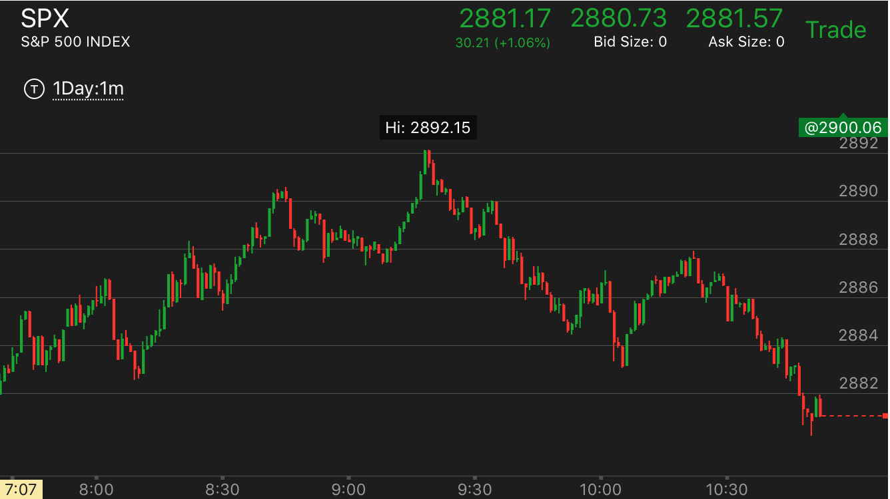
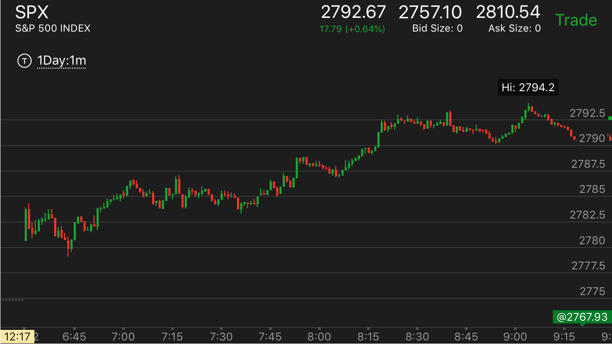
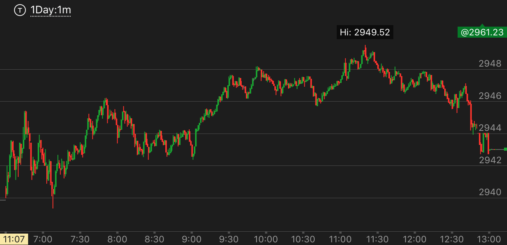

底部或者顶部的加速走势
- 顶部或底部加速，一定要有两个转折，前一个转折没有填补真空，再次下来，然后再次下来然后加速，这样才是底部或者顶部加速
- 上涨的时候，如果第一浪部分填补真空，然后再次上涨。这时出现长时间震荡，那么这个不算顶部加速。做空也一样。
底部加速走势
顶部加速走势
不是顶部/底部加速走势，看起来类似
两段走势上涨后，很快出现了两段下跌走势。不到第二段的开始，再次快速上涨，形成了顶部加速
两段走势上涨后，很快出现了两段下跌走势。不到第二段的开始，再次快速上涨，形成了顶部加速
TOP

图示：8：10是第一段下跌。8：40是第二段。它很快的下跌。本身出现了两段下跌。8：50是第二段下跌.可以看到，它的第二段下跌仍然高于第一段上涨的顶点。
说明仍然处于升势。然后它再次加速上涨。成为了顶部加速走势。这样就变成了全面的反转。它一定会低于走势的开始点的。
底部加速走势
TOP
关键在于在底部反弹幅度不大，不会填补真空，要注意真空的在不同规模上的定义。

图示：从8：20开始不断的缓慢下跌。虽然下跌缓慢，但是总体看，制造出来一个很大的真空。
9：00开始出现了一个5浪走势。这个5浪反弹不大，没有填补真空。然后大跌，创新低。可以想到，这个走势已经在底部了。还要再跌，就底部的形成。
它第一浪反弹很大。速度很快。再次下跌。好像显得要持续下跌一样。同样分析，前面已经到了底部，一定要有一个像样的上涨才对。
果然它在10：50走出了走平后下跌的走势，大幅反弹。

图示：7:30开始的下跌。速度不快。而且回调填补了真空。它下跌后，震荡时间很长。大约30分钟。
可想而知，这个走势会很强。不会轻易反转。8：10连续下跌后，它没有反弹，然后不断下跌。这样就形成了底部加速。
但是要注意这个底部很长。一口气跌了20个点。然后才缓慢反弹。它后面上涨时间超过3个小时。但是也只是填补了真空而已。没有突破。

图示：开盘后，分别在2760，2757，2754，出现了走平或者反弹的走势。这样就制造了几个区间。
从2757的高点看，它下跌后，基本没有填空。就继续下跌。跌倒2748后，反弹一些，再次下跌。形成了底部加速。
但是要考虑到，这个底部加速是相对于2757这个点来说的。所以它可以反到2757以上。但是没有办法超过2760.
后来的反弹果然证实这一点。
假的顶部加速走势
TOP
顶部加速一定要有长时间的走平，然后再次上涨，如果持续上涨，那么不是顶部加速走势。

图示：
9：10上涨后，回调不大，开始震荡，然后继续上涨。它上涨后，立刻回调。然后再次上涨。看起来似乎是顶部加速。但是这个不是。它没有在高点走平或者震荡很久。
从小走势的角度看，它也没有出现典型的顶部特征。

图示：7：00到7：50出现了长时间的震荡，底部平齐，似乎是顶部加速，但是其实不是。它这个是第二浪上涨。不是第三浪。
只有第三浪才是顶部加速。这个属于大涨后，在第二部分积累能量。

图示：12：50出现新低，看起来象加速下跌。而这个其实是大盘走低的方式，它冲高后，
走低。而冲高点和前面反弹高点接近。前面的反弹每次都到一个高点。让人觉得很强。还有一个特点是，它下跌的时候，
速度非常的慢，这样要建立真空需要下跌很长时间和很大幅度，而它下跌幅度不到10个点，就开始长时间的震荡，
真空早已被填补了。
顶部加速走势
TOP

图示：8:15冲高走平，再次加速冲高，8：50没有回调到位，继续上涨，创新高。
这个就是顶部加速了。

图示：9：00上涨后，缓慢走高，没有填补真空。再次加速上涨，稍微拉回后，继续上涨。后来就一直上涨了。这样就形成了顶部加速走势。
要注意它在顶部没有明显的顶部的样子。11：20的是最高点。但是这个最高点也不算典型的顶部的形状。在高点没有一分钟停留。这是因为，它没有转势。
但是需要填补真空。但是这个真空一直填补到了收盘。注意它的真空位置，它到了9：00开始上涨的时候。

图示：
1. 开盘后出现两段上涨走势。这样应该处于跌势。然而可以看到。大盘一直没有低于前面走缓慢的地方。
7：30大盘连续走低后，走平，再次走低。这样就形成了底部加速。
2. 它从底部反弹后，第一浪很小。说明它一定会超过大跌的起点。它果然大涨。但是大涨后，它的第二浪太大了。
而且没有回调，7：50它继续冲高，然后回调很小，再次冲高。这样就形成了顶部加速。这个小的走势也结束了。
3. 但是从更大的时间上看，它在开盘的两段走势冲高后，一直没有回调过走缓慢的地方。反而再次冲高。
这样意味着顶部加速。也就是开盘建立的走势的全面反转。它一定会跌破开盘点的。

图示：10：15出现了两段上涨走势。它在10：40走平然继续走高。
稍微回调后，没有回调到位。继续走高。这样就是一个顶部加速的走势。它的顶部很窄，只有一分钟。好像是
不平衡走势。但是在顶部加速的情况下，这样的走势足以构成顶部。不需要在顶部停留很久。